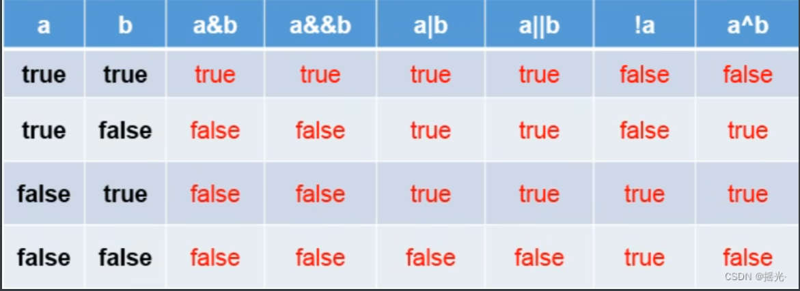

基本数据类型转换
自动类型转换：容量小的类型自动转换位容量大的数据类型。数据类型按容量大小排序为：
有多种类型的数据混合运算时，系统首先自动将所有数据转换成容量最大 的那种数据类型，然后再进行计算。
byte，short，char之间不会相互转换，他们三者再计算时首先转换位int类型。
boolean不能与其他数据类型运算。
当把任何数据类型的值和字符串进行连接运算（+），基本数据类型的值将自动转化位字符串类型。
例
1
2
3
4
5
6
| byte b1 = 2;
int i1 = 129;
byte b2 = b1 + i1;
|
强制类型转换
自动类型转换的逆过程，将容量大的数据类型转换位容量小的数据类型。使用时要加上强制转换符：（），但可能造成精度降低或溢出，格外要注意。
通常，字符串不能直接转换位基本类型，但通过基本类型对应的包装类则可以实现把字符串转换成基本类型。
boolean不可以转换位其他数据类型
例：double转int
1
2
3
| double d1 = 12.3;
int i1 = (int)d1;
System.out.println(i1);
|
特殊情况：
1
2
3
4
5
| long l = 123123; //long型变量没加l，视作int型，若超出int范围会报错
System.out.println(l);
//但float类型无法转换，会报错
|
易错案例
1
2
3
4
5
6
7
8
9
| byte b = 12;
byte b1 = b + 1;
float f1 = b + 12.3;
|
字符串类型
字符串类型：String
String不是基本数据类型，属于引用数据类型
使用方法与基本数据类型一致。
一个字符串可以串接另一个字符串，也可以直接串接其他类型的数据。
注意：
char型变量不可以为空，但String型可以
String可以和8种数据类型做运算，且运算只能是连接运算：+，运算结果仍然是String类型
String不能强制转换为整型
连接运算
1
2
3
4
5
6
7
8
9
10
| class VariableTest3 {
public static void main(String[] args){
int number = 1001;
String numberStr = "学号：";
String info = numberStr + number;
System.out.println(info);
}
}
|
例题：输出* *（间隔一个tab键）
1
2
3
4
5
6
7
8
9
10
11
| class VariableTest3 {
public static void main(String[] args){
System.out.println("* *");
System.out.println('*' + '\t' + '*');
System.out.println('*' + "\t" + '*');
System.out.println('*' + '\t' + "*");
System.out.println('*' + ('\t' + "*"));
}
}
|
进制
所有数字再计算机底层都以二进制形式存在
对于整数，有四种表示方式：
二进制（binary）：0，1，满2进1，以0b或0B开头。
十进制（decimal）：0-9，满10进1。
八进制（octal）：0-7，满8进1，以数字0开头表示
十六进制（hex）：0-9及A-F，满16进1，以0x或0X开头表示。A-F不区分大小写
不管是几进制，输出后的结果都为十进制
二进制
Java整数常量默认是int类型，当用二进制定义整数时，其32位是符号位；当是long类型时，二进制默认占64位，第64位是符合位
二进制的整数有如下三种形式：
原码：直接将一个数值换成二进制数。最高位是符号位
负数的反码：是对原码按位取反，只是最高位（符号位）确定为1。
负数的补码：其反码+1
计算机以二进制补码的形式保存所有的整数
正数的原码、反码、补码都相同
二进制转十进制：如图

负数的反码与补码计算：如图
计算机底层都以补码的形式来存储数据 ！
补码换算为原码：如图
十进制转换为2进制
除二取余
将十进制数一直除2，并记录下每次得到的余数，直到该数为0
13 / 2 = 6 —— 1
6 / 2 = 3 —— 0
3 / 2 = 1 —— 1
1 / 2 = 0 —— 1
将余数取逆，这里为1101，往前补0
则该数为（8位二进制）：0000 1101
二进制转八进制与十六进制
因有一位二进制只有两种状态，三位二进制就是八种状态，正好每一个八进制数码就需要三位二进制来表示。同理十六进制。
运算符
运算符是一种特殊的符合，用以表示数据的运算，赋值和比较等。
算术运算符
赋值运算符
比较运算符（关系运算符）
逻辑运算符
位运算符
三元运算符
算术运算符
除法
1
2
3
4
5
6
7
8
9
10
11
12
13
14
15
16
17
18
| class AriTest {
public static void main(String[] args){
int num1 = 12;
int num2 = 5;
int result1 = num1 / num2;
System.out.println(result1);
int result2 = num1 / num2 * num2;
System.out.println(result2);
double result3 = num1 / num2;
System.out.println(result3);
double result4 = num1 / (num2 + 0.0);
System.out.println(result4);
}
}
|
取模运算
结果的符号与被模数的符合一致
开发中，经常用来判断能否被除尽的情况
自增
1
2
3
4
5
6
7
8
9
10
11
12
13
14
15
16
17
18
19
20
21
22
23
24
| class AriTest {
public static void main(String[] args){
int a1 = 10;
int b1 = ++a1;
System.out.println(a1);
System.out.println(b1);
int a2 = 10;
int b2 = a2++;
System.out.println(a2);
System.out.println(b2);
short s1 = 10;
s1++;
int n = 10;
n += (n++) + (++n);
System.out.println(n);
}
}
|
练习：给出一个三位整数，打印出它的个位，十位，百位。
1
2
3
4
5
6
7
8
9
10
11
12
13
| class AriTest {
public static void main(String[] args){
int num = 789;
int bai = num / 100;
int shi = num % 100 / 10;
int ge = num % 10;
System.out.println("百位为：" + bai );
System.out.println("十位为：" + shi );
System.out.println("个位为：" + ge );
}
}
|
赋值运算符
符合：=
当 “ = ”两侧数据类型不一致时，可以使用自动类型转换或强制类型转换原则进行处理。
支持连续赋值
扩展赋值运算符：+=，-=，*=，/=，%=（推荐使用）
1
2
3
4
5
6
7
8
9
10
11
12
13
| class SetValueTest {
public static void main(String[] args){
short num = 12;
num += 2;
System.out.println(num);
int i = 1;
i *= 0.1;
System.out.println(i);
}
}
|
比较运算符
比较运算符的结果都是boolean型。
逻辑运算符
&——逻辑与 |——逻辑或 ！——逻辑非
&&——短路与 ||——短路或 ^——逻辑异或

异或：a和b相同时为false，不同时为true
1
2
3
4
5
6
7
8
9
10
11
12
13
14
15
16
17
18
19
20
21
22
23
24
25
26
27
28
29
30
31
32
33
34
35
36
37
38
39
40
41
42
43
44
45
| class LogicTest {
public static void main(String[] args){
boolean b1 = false;
int num1 = 10;
if(b1 & (num1++ > 0)){
System.out.println("true");
}else{
System.out.println("false");
}
System.out.println(num1);
boolean b2 = false;
int num2 = 10;
if(b2 && (num2++ > 0)){
System.out.println("true");
}else{
System.out.println("false");
}
System.out.println(num2);
boolean b3 = true;
int num3 = 10;
if(b3 | (num3++ > 0)){
System.out.println("true");
}else{
System.out.println("false");
}
System.out.println(num3);
boolean b4 = true;
int num4 = 10;
if(b4 || (num4++ > 0)){
System.out.println("true");
}else{
System.out.println("false");
}
System.out.println(num4);
}
}
|
推荐优先使用短路与（或）
位运算符（了解）

位运算是直接对整数的二进制进行的运算
& | ^ 是逻辑运算符还是位运算符取决于操作的数据类型（值类型为位运算符，布尔型为逻辑运算符）
左移
在一定范围内左移几位就乘以2的几次幂，但若移动太多位，可能会变为负数
面试题
最高效的方式计算2 * 8？
2 << 3 或 8 << 1
右移
在一定范围内右移几位就除以2的几次幂
若为正数，右移后空缺位补0
若为负数，右移后空缺位补1
无符号右移：被移位二进制最高位无论是0还是1，空缺位都用0补
与、或、异或
将0视作false，1视作true
与：
每一位都进行类似逻辑与的运算
或：
每一位都进行类似逻辑或的运算
异或
每一位都进行类似逻辑异或的运算
取反
包括符号位在内，每一位都取反
练习
1
2
3
4
5
6
7
8
9
10
11
12
13
14
15
16
17
18
19
20
21
22
23
24
25
26
27
28
29
30
| class Temp {
public static void main(String[] args){
int num1 = 10;
int num2 = 20;
System.out.println("num1 = " + num1 + ",num2 = " + num2);
int k = num1 ^ num2;
num1 = k ^ num1;
num2 = k ^ num2;
System.out.println("num1 = " + num1 + ",num2 = " + num2);
}
}
|
三元运算符
格式：
（条件表达式）？表达式1：表达式2；
条件表达式的结果为boolean型
根据条件表达式的真假，决定执行表达式1，还是表达式2：
若条件表达式的结果为true，则执行表达式1；
若条件表达式的结果为false，则执行表达式2；
表达式1和表达式2为同种类型
三元运算符与if-else的联系与区别：
1）三元运算符可简化if-else语句
2）三元运算符要求必须返回一个结果
3）if后的代码块可以有多个语句
运算符的优先级
运算符有不同的优先级，所谓优先级就是表达式运算中的运算顺序。
表中上一行运算符总优先于下一行
只有单目运算符，三元运算符，赋值运算符是从右向左运算的
求0-255的整数的16进制
1
2
3
4
5
6
7
8
9
10
11
12
13
| class Num {
public static void main(String[] args){
int i1 = 60;
int i2 = i1 & 15;
String j = (i2 > 9) ? (char)(i2 - 10 + 'A') + "" : i2 + "";
int temp = i1 >>> 4;
i2 = temp & 15;
String k = (i2 > 9) ? (char)(i2 - 10 + 'A') + "" : i2 + "";
System.out.println(k + j);
}
}
|